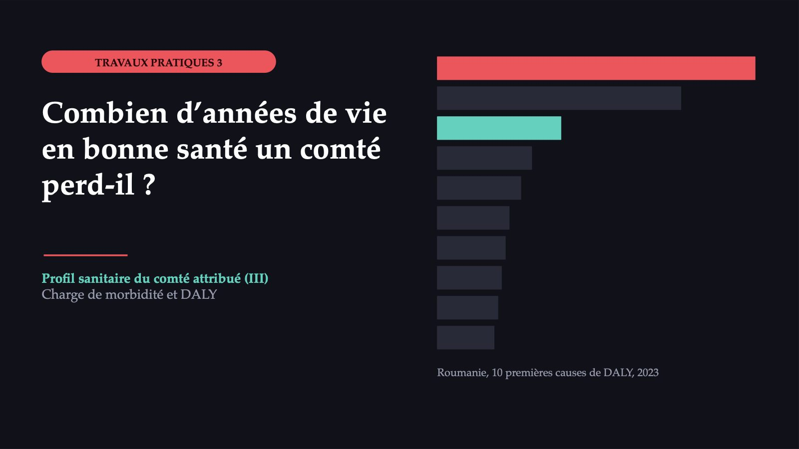

Combien d’années de vie en bonne santé un comté perd-il ?

1 / 23473,5
![LE CAS POUR TOUT LE GROUPE Deux comtés, deux chiffres, une seule somme d’argent Teleorman 473,5 années de vie en bonne santé perdues pour 1 000 habitants, 2023 Ilfov 287,0 années de vie en bonne santé perdues pour 1 000 habitants, 2023 Estimations propres, calculées à partir des taux GBD du pays ; taux bruts. Où va l’argent, et que voudriez-vous savoir de plus avant de décider ? Eurostat (décès et population) et GBD 2023, IHME ; méthode du TP 3. Le GBD ne publie pas de chiffres pour les comtés de la Roumanie.](diapozitive/LP03/002.jpg) 2 / 23
2 / 23Ce que mesure chacun
![DEUX CHIFFRES, TROIS MESURES Ce que mesure chacun Taux brut Années perdues pour 1 000 habitants. Il ne tient pas compte de l’âge de la population. Roumanie, de même : 396,4. Nombre absolu Le volume de la charge. Ilfov, avec une population presque double, perd davantage d’années au total. Taux standardisé selon l’âge Il élimine l’effet de l’âge ; c’est sur lui que se comparent les territoires. Taux brut ≠ taux standardisé. La correction pour l’âge : le rapport entre les années perdues par décès calculées et celles qui étaient attendues (étape 4).](diapozitive/LP03/003.jpg) 3 / 23
3 / 23Le taux brut montre combien d’années perd, en moyenne, un habitant, mais il ne tient pas compte de l’âge de la population. Le nombre absolu montre le volume de la charge et combien de services il faut payer. Pour les deux comtés, la correction pour l’âge est faite à la quatrième étape de l’exercice, par le rapport entre les années perdues par décès calculées et celles qui étaient attendues.
YLL
![DALY : ANNÉES DE VIE AJUSTÉES SUR L’INCAPACITÉ (AVCI) DALY = YLL + YLD YLL Années de vie perdues par décès prématuré. Chaque décès est multiplié par l’espérance de vie prédite à l’âge du décès, à partir d’une espérance de vie théorique « la meilleure », mondiale, identique pour les deux sexes. YLD Années vécues avec une incapacité (AVI), pondérées selon la gravité de la maladie. La prévalence de chaque conséquence de la maladie est multipliée par son poids d’incapacité. Un DALY est une année en pleine santé perdue. Un décès à un âge jeune pèse davantage qu’un décès à un âge avancé.](diapozitive/LP03/004.jpg) 4 / 23
4 / 23Un DALY représente la perte de l’équivalent d’une année en pleine santé. Pour une maladie, le DALY est la somme de deux termes : les années de vie perdues par décès prématuré et les années de vie en bonne santé perdues du fait de l’incapacité.
Les personnes âgées d’un comté, en une seule année
![UN EXEMPLE AVEC DES DONNÉES RÉELLES Les personnes âgées d’un comté, en une seule année Teleorman, 70 ans et plus, 2023 : décès et population réels (Eurostat) ; résultat : estimation propre, calculée à partir des taux GBD du pays. YLL 3 917 décès × 13,3 années perdues par décès = 52 096,1 décès × années perdues par décès YLD 59 730 personnes × 281,7 ÷ 1 000 = 16 825,9 population × YLD pour 1 000 ÷ 1 000 DALY 52 096,1 + 16 825,9 = 68 922,0 années de vie en bonne santé perdues YLL + YLD Sources : Eurostat ; GBD 2023, IHME ; méthode du TP 3.](diapozitive/LP03/005.jpg) 5 / 23
5 / 23La Roumanie dans GBD Compare
![DANS L’OUTIL DÉMONSTRATION · GBD COMPARE La Roumanie dans GBD Compare 1 Le lieu : la Roumanie. L’année : 2023 ou 2000. 2 La mesure : DALY. L’unité : nombre, pourcentage du total ou taux pour 100 000 habitants. 3 L’âge et le sexe : tous les âges et les deux sexes, puis tour à tour des groupes d’âge et chaque sexe. 4 Trois visualisations : le diagramme en mosaïque, le diagramme en barres, l’évolution dans le temps. 5 L’export : les données affichées se téléchargent au format CSV et s’ouvrent dans Excel. Sans compte IHME, la même démonstration se fait sur les tableaux des notes de la séance.](diapozitive/LP03/006.jpg) 6 / 23
6 / 2310 premières causes de DALY : 2000 et 2023
![ROUMANIE · TOUS ÂGES · LES DEUX SEXES 10 premières causes de DALY : 2000 et 2023 2000 2023 ■ sorties ■ entrées Cardiopathie ischémique 1 1 Cardiopathie ischémique Accident vasculaire cérébral 2 2 Accident vasculaire cérébral Lombalgie 3 3 Lombalgie Cirrhose 4 4 Cirrhose Cancer du poumon 7 5 Cancer du poumon Chutes 8 6 Chutes 7 Cardiopathie hypertensive Infections respiratoires inférieures 5 8 Infections respiratoires inférieures Bronchopneumopathie chronique obstructive 6 9 Bronchopneumopathie chronique obstructive 10 Perte auditive Affections néonatales 9 Accidents de la route 10 La 10e place est fragile : la perte auditive (176 000) devance de peu la cardiomyopathie (175 000). DALY en chiffres absolus, trois chiffres significatifs. Source : GBD 2023, IHME, 17.10.2026.](diapozitive/LP03/007.jpg) 7 / 23
7 / 23L’ordre en bas de liste est fragile : à la 10e place, la perte auditive (176 000) devance de peu la cardiomyopathie (175 000), et en 2000 la bronchopneumopathie chronique obstructive et le cancer du poumon avaient, après arrondi, le même nombre de DALY (252 000).
La même cause, deux histoires
 8 / 23
8 / 23Quatre territoires, avec les intervalles d’incertitude
 9 / 23
9 / 23Chaque valeur GBD est une estimation tirée d’un modèle et possède un intervalle d’incertitude. Du chevauchement de deux intervalles, on ne peut conclure ni que la différence est réelle, ni que les valeurs sont égales.
La liste des causes dépend de l’âge
![ROUMANIE · 2023 La liste des causes dépend de l’âge ■ années perdues par décès (YLL) ■ années vécues avec une incapacité (YLD) À 15–49 ans 684 000 874 000 1. Lombalgie · 8,7 % 2. Cardiopathie ischémique · 4,5 % 3. Chutes · 4,4 % À 70 ans et plus 2 190 000 725 000 1. Cardiopathie ischémique · 19,6 % 2. Accident vasculaire cérébral · 17,1 % 3. Cardiopathie hypertensive · 5,2 % Chez les jeunes, la charge vient surtout de maladies avec lesquelles on vit, chez les personnes âgées de maladies qui tuent. DALY en chiffres absolus ; pourcentage : part de la cause dans le groupe. Source : GBD 2023, IHME, 17.10.2026.](diapozitive/LP03/010.jpg) 10 / 23
10 / 23La liste dépend aussi du sexe. En 2023, chez les hommes, la cardiopathie ischémique et l’accident vasculaire cérébral sont suivis de la cirrhose et du cancer du poumon ; chez les femmes, ils sont suivis de la lombalgie, de la cardiopathie hypertensive et de la maladie d’Alzheimer.
Quatre étapes, à partir de deux séries
![LA CHARGE DE MORBIDITÉ DANS UN COMTÉ Quatre étapes, à partir de deux séries Le GBD ne publie pas les comtés de la Roumanie. La méthode utilise les décès et la population du comté par âge. 1 YLL : les décès du groupe × les années perdues par décès. 2 YLD : la population moyenne du groupe × YLD pour 1 000 habitants ÷ 1 000. 3 DALY du comté : la somme des YLL et des YLD sur tous les groupes. 4 DALY ÷ population moyenne totale × 1 000. Année 2023 pour les deux séries. Population moyenne : moyenne entre le 1er janvier 2023 et le 1er janvier 2024.](diapozitive/LP03/011.jpg) 11 / 23
11 / 23L’exercice commun, en quatre étapes
12 / 23Teleorman et Ilfov, 2023
![DONNÉES DE L’ÉTAPE 3 Teleorman et Ilfov, 2023 Groupe d’âge · Teleorman : décès · Teleorman : population moyenne · Ilfov : décès · Ilfov : population moyenne 0–14 ans · 17 · 41 821 · 26 · 103 936,5 15–49 ans · 226 · 122 416 · 294 · 294 901 50–69 ans · 1 244 · 92 795,5 · 1 286 · 126 620,5 70 ans et plus · 3 917 · 59 730 · 2 826 · 48 790 Total · 5 404 · 316 762,5 · 4 432 · 574 248 Population moyenne de l’année 2023 : moyenne entre le 1er janvier 2023 et le 1er janvier 2024. Source : Eurostat, demo_r_magec3 et demo_r_pjangrp3.](diapozitive/LP03/013.jpg) 13 / 23
13 / 23Ce qui se multiplie par quoi
 14 / 23
14 / 23YLL attendues et YLL calculées
 15 / 23
15 / 23Si Teleorman avait les taux de mortalité par âge du pays, ses YLL seraient de 98 695, contre 100 692 calculées par groupes quinquennaux ; pour Ilfov, 115 589 contre 92 164.
Même démarche, avec votre fichier
 16 / 23
16 / 234
![EN ÉQUIPE · VOTE ESQUISSE DE L’INFOGRAPHIE Une page, cinq éléments La charge de morbidité dans le comté de ..., 2023 [chiffre du comté] estimation propre, calculée à partir des taux GBD du pays Comparaison avec le pays et avec l’Union européenne Cinq premières causes : données nationales Sources : GBD 2023, IHME ; Eurostat 4 exactitude des données, y compris le marquage du chiffre du comté 4 clarté visuelle 2 sources citées Deux ou trois équipes montrent leur esquisse. Le groupe vote, à main levée, pour l’esquisse qui se comprend le plus vite.](diapozitive/LP03/017.jpg) 17 / 23
17 / 23La résolution s’affiche dans le formulaire de la fiche, une fois celle-ci remise.
La résolution s’affiche dans le formulaire de la fiche, une fois celle-ci remise.
La résolution s’affiche dans le formulaire de la fiche, une fois celle-ci remise.
La résolution s’affiche dans le formulaire de la fiche, une fois celle-ci remise.
La résolution s’affiche dans le formulaire de la fiche, une fois celle-ci remise.
La résolution s’affiche dans le formulaire de la fiche, une fois celle-ci remise.
La résolution s’affiche dans le formulaire de la fiche, une fois celle-ci remise.
La résolution s’affiche dans le formulaire de la fiche, une fois celle-ci remise.
La charge de morbidité dans votre comté
![À LA MAISON, DANS LES DEUX JOURS La charge de morbidité dans votre comté Synthèse, à tour de rôle : quel chiffre mettriez-vous en première page, et quelle priorité en découle ? 1 YLL, YLD et DALY du comté, par groupes quinquennaux, pour 2023. 2 DALY pour 1 000 habitants et part des YLL, comparés à Teleorman (473,2), Ilfov (287,8) et au pays (397,0). 3 L’infographie, PDF ou PNG : chiffre du comté marqué comme estimation propre, cinq premières causes marquées comme nationales. 4 La priorité de santé publique, en deux phrases. Individuellement, dans le formulaire à la maison. Comtés : estimations propres, calculées à partir des taux GBD du pays.](diapozitive/LP03/022.jpg) 22 / 23
22 / 23Trois questions pour finir
23 / 23Flèches ou espace : navigation · O : vue d’ensemble · N : notes de l’intervenant · F : plein écran · Échap : fermer